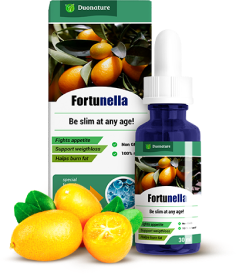

¿Qué son las gotas Fortunella?

No es simplemente un complemento alimentario que no hace daño, es un activador biológico. Hoy día es un remedio único eficaz para luchar contra el sobrepeso.
¡Le deseamos salud con nosotros!
El endocrinólogo jefe de Alemania informó por qué este año DESPEDIRÁN A TODOS LOS DIETÓLOGOS. Material exclusivo original
Henry Fischer – jefe del departamento de biofísica celular en el Instituto Científico de Investigación de la Sociedad de Max Planck. Endocrinólogo, consultor de la Organización Mundial de la Salud sobre la dietología.
Las dietas y los medios de adelgazamiento sintéticos MATAN SU SALUD. Pueden tener efecto temporal, pero al volver a la vida rutinaria Vd. otra vez engordará. Un par de meses de cuerpo esbelto no valen para vivir 5 o 10 años menos. Afortunadamente, la dietología moderna tiene solución.
El año pasado los EE.UU. eran el primer país por número de personas con sobrepeso, pero hoy día en EE.UU. casi no queda gente con sobrepeso. ¿Como es posible?
Han hecho una innovación en dietología que cambiará todo el mundo, aprendieron a crear extracto de frutas de fortunella. Es una fruta de Asía del Sur que destruye las células de grasa y mejora bastante la velocidad de metabolismo. El problema es que, al madurarse, se caduca en pocos días.
Había que encontrar un conservante capaz de conservar las características de fortunella tan poco frecuentes. Y resultó ser ácido clorogénico orgánico que contiene café verde. Gracias al mismo fue posible crear las gotas Fortunella – el primer en el mundo extracto de frutas de fortunella que estimula la pérdida de peso natural y aumenta la velocidad de metabolismo un 307%.
Solo piense en eso, en una semana se puede perder 5 kg de sobrepeso, al mismo tiempo, limpiando el cuerpo de toxinas. Por lo tanto, en los EE.UU. la gente resuelve problemas de sobrepeso más rápido que los de un resfriado.
No es simplemente un complemento alimentario que no hace daño, es un activador biológico. Hoy día es un remedio único eficaz para luchar contra el sobrepeso.
Nuestro cuerpo es un mecanismo perfecto creado por la naturaleza. Cuando estamos enfermos, a nuestro cuerpo le falta vitamina C. Cuando rompemos los huesos, el mismo pide vitamina D y calcio. ¿Qué hacemos cuando queremos adelgazar? Nos torturamos con dieta QUE SIMPLEMENTE DAÑA AL CUERPO. El cuerpo puede deshacerse sin ayuda de los kilos que sobran si le damos los microelementos capaces de disolver la grasa y convertirla en energía. Son los que forman parte de la fruta de fortunella.
Las gotas Fortunella – es un extracto que además del café verde, guaraná y té verde contiene L-carnitina, bromelaína y Co Q-10. ¡Es un cóctel ideal para luchar contra la grasa! Se disuelve en un instante.
Semana 1 (quitar el agua)
Semana 2 (limpiase de toxinas)
Semana 3 (activar lipolisis)
Semana 4 (corregir el metabolismo)
Semana 5 (quemar la grasa visceral)
Semana 6 (fijar el peso)
semanas
Kilos quitadosSemana 1 (quitar el agua)
Semana 2 (limpiase de toxinas)
Semana 3 (activar lipolisis)
Semana 4 (corregir el metabolismo)
Semana 5 (quemar la grasa visceral)
Semana 6 (fijar el peso)
Para mejorar la eficacia del adelgazamiento, tome las gotas Fortunella 20 minutos antes de comer.
Es un remedio único capaz de quitar la grasa de zonas «problemáticas»: manos en el área de tríceps, cuello, caderas, así como grasa en el área de omóplato.
En los ensayos participaron 100 mujeres con sobrepeso, de 30 a 72 años de edad. Las participantes no cambiaron su alimentación y modo de vivir, tomaban el remedio en casa. El resultado sorprendió a toda la sociedad médica:
Ahorre 100 Euros de consulta de dietólogo. Hemos desarrollado para Vd. una calculadora en línea que hará un cálculo exacto del curso de quema de grasa terapéutico tomando en cuenta Sus parámetros. Úsela ahora mismo (es gratis).

Su peso es normal. Para estar en forma sin dietas, tome las gotas Fortunella una vez a la semana.
Tiene no más de 9 kg de sobrepeso. Tome las gotas Fortunella durante dos semanas.
Tiene más de 18 kilos de sobrepeso, lo cual corresponde a la segunda etapa de obesidad. Tome un curso de las gotas Fortunella durante dos semanas.
Vd. está en la última etapa de obesidad. TOME LAS MEDIDAS IMPRESCINDIBLES: tome las gotas Fortunella en un curso de 10 a 14 semanas. Durante este período puede quitar de 22 a 47 kilos.
Consejo de la edición: El uso de las gotas Fortunella antes de comer reduce el hambre, por lo tanto, Vd. tendrá suficiente con la mitad de la ración ordinaria.
Deje su dirección de correo-e, y nuestro dietólogo desarrollará para Vd. un esquema de adelgazamiento personal con régimen alimenticio. Es absolutamente gratis y confidencial, recibirá el mensaje durante una hora.
Es una innovación importante no solo en dietología, sino en la medicina mundial. Ursula Haver, nutricionista del centro médico «FitLife», Austria
Es una rabia que las gotas Fortunella no se vendan en farmacias. En los EE.UU. se puede comprarlas en un supermercado ordinario. Ya es hora de quitar el sobrepeso una vez y para siempre. Ursula Schultz, escritora, dietólogo emérito, Alemania
Creo que todos los dietólogos deberían recomendar las gotas Fortunella a sus pacientes. No vale la pena ofrecer otros remedios cuando hay esta solución. María Trukhanova, presentadora del programa «Salud femenina» en canal RTR, Rusia
Fue comprobado que el mes d agosto es la mejor época para empezar el curso de adelgazamiento con las gotas Fortunella. Gracias a los cambios de la temperatura media y la aceleración del metabolismo, el efecto de tomarlo aumenta un 43%.
¡Cuidado con falsificaciones! Las gotas Fortunella se venden solo por un productor. Y Hasta el Inclusive Vd. puede participar en una promoción on premio para todos, donde se puede ganar un descuento hasta 50%!

¡Buenos días! ¿Me puede informar si se puede tomar las gotas en caso de problemas de digestión?
Contestar
Buenos días, Sandra. Las gotas Fortunella normalizan no solo la digestión, sino todos los sistemas del cuerpo. Tome las gotas según la instrucción y no aumente la dosis. ¡Enhorabuena!
ContestarYa no creo más en promesas «20 kg menos en un mes», nunca pasa eso. Tomaba estas gotas, en un mes perdí solo 4 kilos, pero igual podría haber seguido la dieta.
Contestar

Sinceramente, solo los primeros dos días, luego empecé a trabajar y no le hice mucho caso.
Contestar
María, es muy importante seguir la instrucción, vuelva a probarlo, no omite nada ni aumente la dosis, el efecto de las gotas es acumulativo por eso no lo deje si al principio no nota ninguna reducción de peso repentina.
Contestar
Seguí Su consejo, y realmente, al principio el peso se quitaba más lentamente que pensaba, pero 2 semanas más veo -11,5 kg en la báscula. ¡Muchas gracias!
Contestar
¡Perdí 34 kilos con las gotas Fortunella! Me veo estupendamente. Y lo más importante es que el peso no vuelve. Aconsejo a todos este remedio.
ContestarEstoy adelgazando con las gotas Fortunella, empecé por 78 kilos. Y durante la primera semana quité 4,5 kilos, básicamente, agua y toxinas. Durante la segunda semana perdí 7,5 kilos más, pero solo era grasa. (Tengo báscula con analizador del contenido del cuerpo, por lo tanto, controlé casi todos los cambios). Ahora mi peso es de 55 kilos, y eso solo en un mes y medio.
Contestar
He oído tantas referencias positivas sobre este remedio que decidí pedirlo, encontré el sitio web en Internet y pedí un curso. Como resultado, tardaron 2 semanas en entregarlo, no había ninguna instrucción y el sitio web donde lo pedí dejó de funcionar. Tiene sabor asqueroso, no tiene ningún efecto, lo tomé durante una semana y tuve problemas de digestión, por supuesto, lo dejé. No lo aconsejo a nadie.
Contestar
Buenos días, Ana. Ha comprado una falsificación. Las gotas Fortunella en nuestro país se venden solo por un productor, su sitio web está indicado más arriba. Cada embalaje tiene una instrucción y por supuesto las gotas no provocan ningún problema de salud, al contrario, normalizan el funcionamiento de todo el cuerpo. Pídelo en el sitio web oficial, y verá qué resultado podrá tener.
Contestar
Lo hice, pedí las gotas en el sitio web indicado más arribo. Me las entregaron a casa 2 días después del pedido, hay una instrucción, tiene otro aspecto, no como la vez pasada, el embalaje es de calidad. Tiene sabor agradable, llevo 2 días tomándolo siguiendo la instrucción, no noté ningún problema. ¡Chicas, cuidado con falsificaciones!
Contestar


Llevaba mucho tiempo buscando un remedio para adelgazar, porque tengo mucha pereza. Lo pedí, me gustó el precio accesible y el contenido natural que no daña. Tampoco me apetece tomar químicos. Lo estoy tomando, tengo menos apetito, me siento perfectamente, no hay ningún efecto secundario. En la báscula ya veo - 7 kg, en 8 días. ¡Estoy muy contenta!
Contestar
Llevo ya 3 semanas tomando las gotas, en total, 3 kg menos. Estoy decepcionada, esperaba más de eso.
Contestar


Es una dosis diaria muy pequeña, por lo tanto el resultado no es perfecto. Tome una cucharilla 2 veces al día o 15 gotas 6 veces al día, y mejor 20 minutos antes de comer.
Contestar

Vd. lleva razón, cambié la dosis y el peso empezó a bajar. ¡En una semana 5,5 kilos menos!
Contestar
Después del parto no pude adelgazar, probé muchas cosas, dietas y pastillas y hasta dietas de hambre. Solo las gotas Fortunella ayudaron, en un mes perdí 16,5 kilos y parecía igual que antes del parto. Chicas, no os torturéis con dietas, podéis pedir las gotas y adelgazar rápido sin dañar Su salud. Podéis verme a mí)
172 comentarios hoy
Un nutricionista me recomendó las gotas Fortunella. Dijo que ahora es el mejor remedio y que no daña la salud. Llevo tres semanas tomándolo, el resultado es: 12,5 kilos menos (el peso inicial era de 84 kg). Para mí es un buen resultado porque antes nada me ayudaba. Espero adelgazar hasta los 52 kg deseados))
ContestarElena, enhorabuena, y todo saldrá bien
ContestarBuenos días. Por favor, ¿me puede decir si al tomar las gotas hay que seguir dietas o practicar deporte?
ContestarBuenos días, Ana. No es imprescindible seguir ninguna dieta o aumentar la actividad física al tomar las gotas, pero si reduce el consumo de azúcar y de grasas, podrá obtener el resultado deseado más rápido.
ContestarMuchas gracias. Es que me temo no poder rechazar mi comida favorita, pero quiero tanto adelgazar. He pedido un curso, lo probaré.
ContestarEstoy encantada con este remedio. ¡En 6 semanas perdí 23,5 kilos! Sin torturarme con dietas ni deporte, solo al principio he reducido un poco la ración, y tres días más tarde noté la reducción del apetito y que no quería comer demasiado por la noche. Valore mis resultados)
¡Ana, Vd. tiene muy buen aspecto!
Contestar